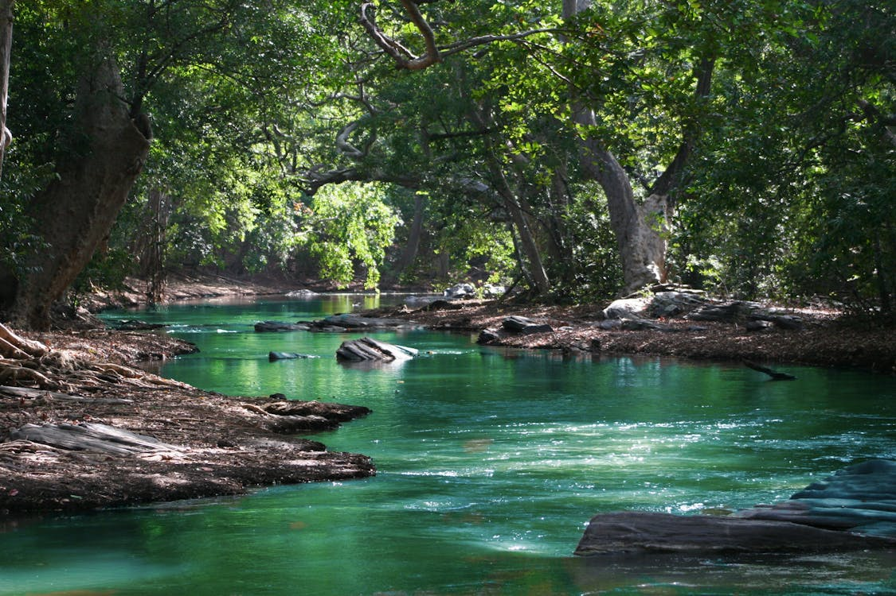
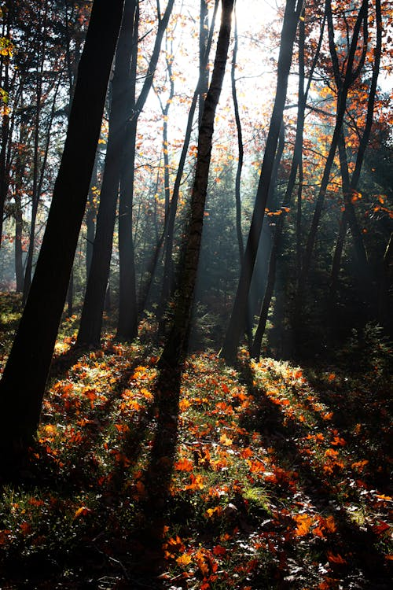
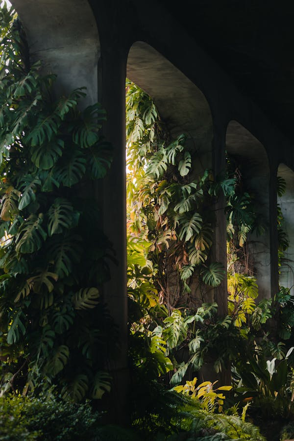
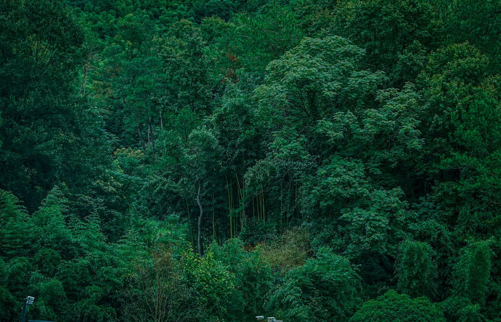

Website about forests and nature
Websites are cool. Forests are cool. Let's make a website about forests!

Captivating Forest Scenes

A serene forest scene with towering trees and a lush green canopy. The sunlight filters through the leaves, creating a dappled pattern on the forest floor.
A misty forest landscape with a mystical ambiance. The fog weaves through the trees, giving the scene an ethereal quality.

A vibrant forest in the peak of autumn. The trees are adorned with leaves in shades of red, orange, and yellow, creating a warm and inviting atmosphere.

A tranquil forest path surrounded by dense foliage. The path invites you to take a peaceful walk and enjoy the fresh air and natural beauty.
“To be without trees would,
in the most literal way,
to be without our roots.”
Call to action! It's time!
Sign up for our product by clicking that button right over there!